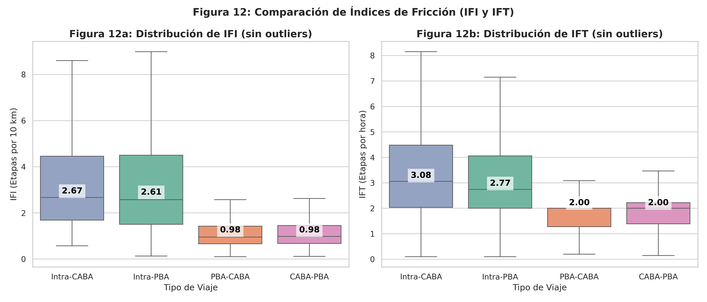
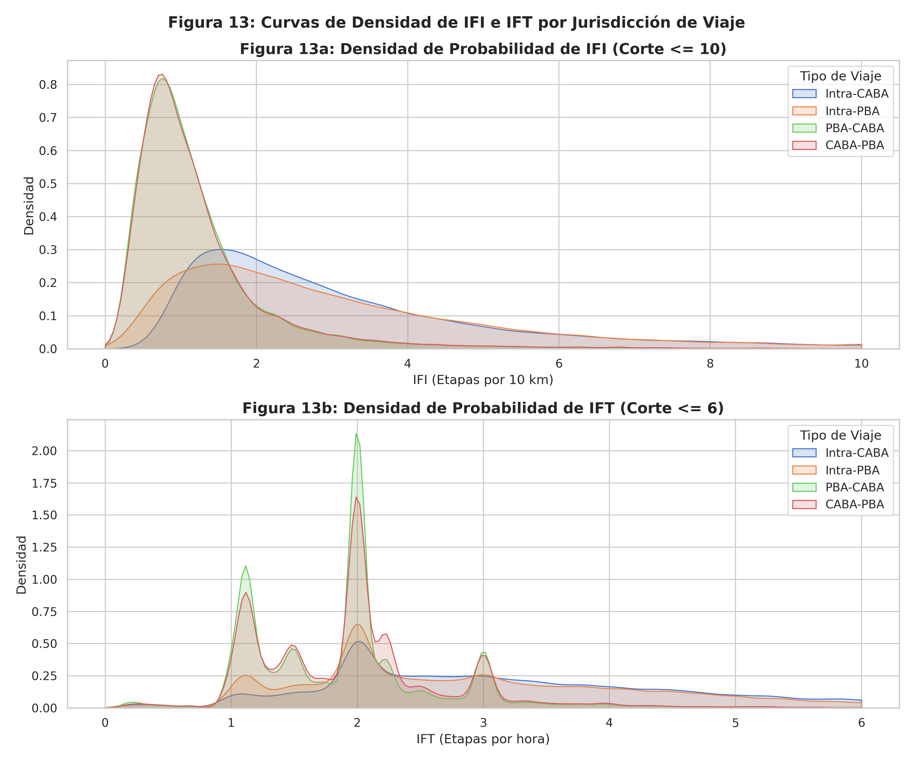

Matriz de Origen-Destino de Transporte Público en base a datos SUBE
Análisis de Vulnerabilidad Socio-Espacial e Intermodalidad Forzada en el AMBA
Problemática y Objetivos del Trabajo
- Fragmentación Espacial: Asimetría severa entre la distribución del empleo formal (concentrado en el centro/CABA) y el crecimiento habitacional (extendido en la periferia/PBA).
- Intermodalidad Forzada: Residentes periféricos obligados a realizar múltiples combinaciones (colectivo + tren + subte) debido a la baja cobertura directa.
- Vulnerabilidad Socio-Espacial: Los sectores de menores ingresos no solo viajan más tiempo, sino que sufren una mayor fricción física y económica por cada transbordo.
- Construcción de Matriz OD: Generar y modelar la matriz origen-destino intermodal agregada bajo grilla hexagonal (H3 resolución 8).
- Ingeniería de Características: Cuantificar la ineficiencia (IFI) y la fricción de transbordo (IFT) de los flujos de viaje diarios.
- Evaluación de Redes y Equidad: Analizar la red en base a centralidades ponderadas y cruzar estos indicadores estructurales con variables socioeconómicas.
Distribución Jurisdiccional de IFI e IFT
- IFI (Ineficiencia de Viaje):
- Intra-CABA: Distribución concentrada, con mediana baja. Indica viajes directos.
- Intra-PBA: Mayor dispersión, viajes regionales con desvíos físicos importantes.
- PBA-CABA (Interjurisdiccional): Mediana más alta de IFI, reflejando rodeos obligatorios para ingresar a los corredores radiales.
- IFT (Fricción de Transbordo):
- El viaje promedio PBA-CABA acumula más de 1.6 transbordos promedio, multiplicando la fatiga e incertidumbre del usuario, comparado con 0.3 en viajes internos de CABA.

Métricas de Grafos y Lógica de Enlaces
- Enlaces basados en IFI / IFT: Los pesos del grafo representan la fricción acumulada entre hexágonos.
- Para buscar el camino más eficiente (ruteo/Dijkstra), los enlaces deben tener el peso directo de IFI o IFT (buscando minimizar costo).
- Un camino de mínimo costo representa la ruta con menor fricción o desvío físico.
- Significado de las Centralidades:
- Cercanía (Closeness): La inversa de la distancia media. Una cercanía baja significa que un hexágono está estructuralmente aislado (alta dificultad general para llegar a él).
- Intermediación (Betweenness): Frecuencia con la que un nodo es puente. Un valor alto identifica cuellos de botella e hitos de trasbordo forzado.
La inversa $1/\text{IFI}$ y $1/\text{IFT}$ representa la fuerza de conexión o facilidad. Se utiliza para:
- Algoritmos de detección de comunidades (donde pesos altos representan enlaces fuertes).
- Grafos de similitud estructural o clusters de conectividad directa.
Ambos enfoques son válidos e instrumentales para distintas preguntas de investigación: peso directo para ruteo de costo, peso inverso para afinidad/comunidades.
Propósito y Valor del Clustering Espacial
- Segmentación Multidimensional: Evita análisis univariados aislados. Integra IFI, IFT, centralidades estructurales (Closeness, Betweenness) y vulnerabilidad social en una sola tipología geográfica.
- Descubrimiento de Patrones no Lineales: Agrupa de manera orgánica hexágonos con perfiles idénticos de ineficiencia sin forzar límites municipales o políticos artificiales.
- Foco para Políticas Públicas: Permite a los planificadores identificar clusters críticos específicos donde el transporte falla sistemáticamente y la población es vulnerable.
- IFI medio por hexágono (eficiencia del viaje)
- IFT medio por hexágono (número de transbordos)
- Centralidad de Cercanía ponderada (aislamiento)
- Centralidad de Intermediación (puentes y trasbordos)
- Porcentaje de Tarifa Social (vulnerabilidad de ingresos)
Cruzamiento Socio-Espacial y Correlaciones
| Relación Analizada | Pearson (r) | Spearman (ρ) | Interpretación del Hallazgo |
|---|---|---|---|
| Tarifa Social vs. Cercanía | -0.304 | -0.280 | Sectores vulnerables viven en zonas con baja accesibilidad de red (aislamiento). |
| Tarifa Social vs. IFI | +0.357 | +0.347 | Viajes de usuarios de bajos recursos son sistemáticamente más indirectos. |
| Tarifa Social vs. IFT | +0.321 | +0.312 | Mayor dependencia y fricción por transbordo en áreas vulnerables. |
*Todas las correlaciones son estadísticamente significativas con p-value < 0.001.
La correlación negativa entre Tarifa Social y Cercanía demuestra que el aislamiento espacial y la pobreza se refuerzan mutuamente en el AMBA.
La correlación positiva con el IFI e IFT demuestra que el transporte público penaliza a quienes menos recursos tienen, forzando viajes más costosos en tiempo y transbordos.
Cuantificación del Transbordo (Regresión OLS)
Estimación por mínimos cuadrados ordinarios ($N = 5.508.005$ viajes, $R^2 = 0.2089$).
| Variable Explicativa | Coeficiente (β) | t-stat | p-value |
|---|---|---|---|
| Cantidad de Etapas | +22.839 min | 1025.51 | < 0.0001 |
| Distancia (km) | +0.137 min | 89.57 | < 0.0001 |
| Densidad Oferta Origen | +0.087 min | 40.16 | < 0.0001 |
| Latitud Origen | +1.949 min | 15.16 | < 0.0001 |
| Longitud Origen | -0.008 min | -0.09 | 0.9278 |
- El costo neto del transbordo: Controlando por distancia y ubicación, cada transbordo adicional añade en promedio 22.84 minutos al viaje total.
- Distancia vs. Fragmentación: La distancia aporta solo 8.2 segundos por km, lo que demuestra que los tiempos de espera y acceso en transbordos dominan la duración del viaje.
- Congestión en Origen: La densidad de paradas en el origen aumenta el tiempo de viaje ligeramente (demoras de abordaje y tráfico local).
Perfiles de Exclusión por Clusters (HDBSCAN)
- Clúster 0: Periferia Crítica
Tarifa Social: ~45% | IFI: Alto | Cercanía: Muy Baja
Ubicación: Extremos de Florencio Varela, Merlo y Moreno. Alto aislamiento, dependencia de transbordos ineficientes. - Clúster 1: Nodos Conectores
Tarifa Social: ~32% | Intermediación (Betweenness): Máxima
Nodos clave como Constitución, Retiro, Liniers y Lanús. Alta congestión y vulnerabilidad operativa ante fallas. - Clúster 2: Centro Consolidado
Tarifa Social: <15% | IFI/IFT: Bajos | Cercanía: Máxima
Corredor norte de CABA y primer cordón urbano. Acceso directo al empleo y nula fricción espacial.

Conclusiones y Recomendaciones de Planificación
- Injusticia Socio-Espacial: La población del conurbano que viaja hacia el centro realiza un esfuerzo desproporcionadamente mayor de transbordos e ineficiencia física.
- El Rol de los Nodos: El estudio cuantitativo de intermediación identifica con precisión los cuellos de botella que requieren intervención urgente.
- Datos SUBE como Sensor Urbano: Se valida la metodología para procesar Smart Card Data masiva y transformarla en métricas estructuradas de equidad territorial.
- Rediseño de Red Radial: Integrar líneas de colectivos periféricas y transversales para evitar el embudo radial hacia CABA.
- Subsidios Focalizados: Utilizar la delimitación de los clusters críticos de HDBSCAN para orientar tarifas diferenciales y mejoras operativas directamente en las zonas de mayor exclusión.
- Infraestructura de Transferencia: Invertir en los nodos conectores identificados con alta intermediación para mitigar la fricción de transbordo (mejoras físicas, seguridad e información).